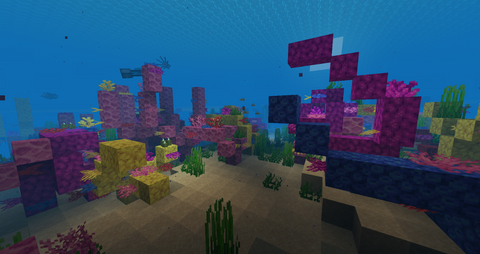
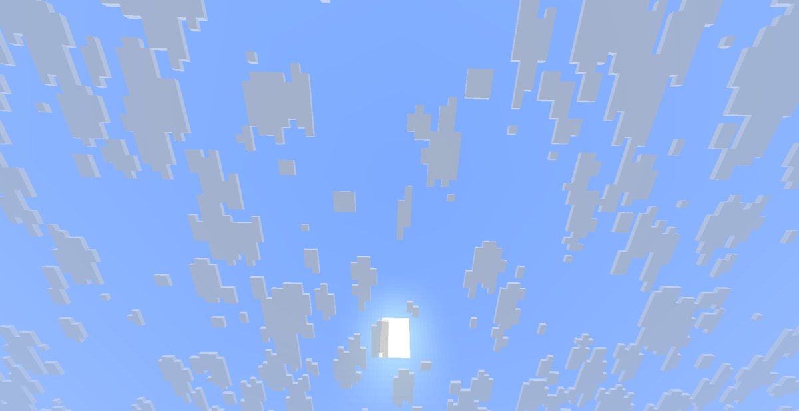
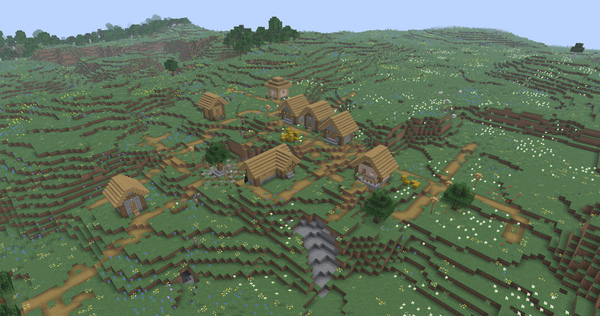
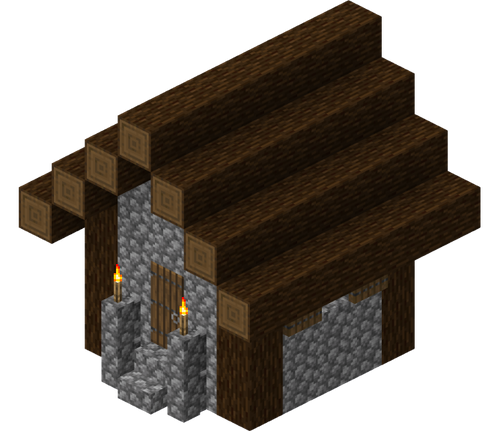
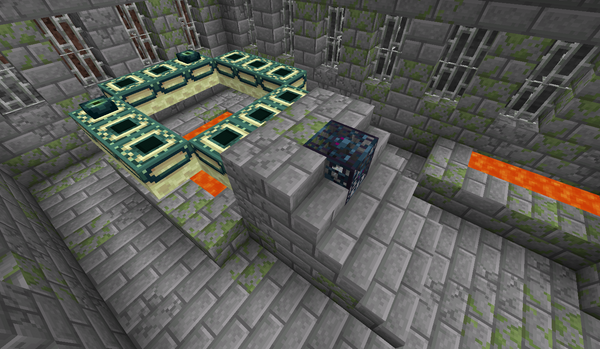
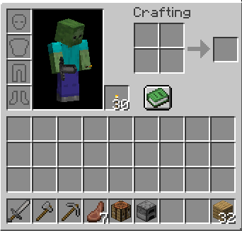

An intro to the overworld
The overworld is the first dimension you'll step foot in a Minecraft world. The overworld is filled with land, oceans and caves. Throughout the overworld, the biomes are filled with different mobs and plants that give the overworld more life. The overworld is the only dimension that follows a day and night cycle. Out of all 3 Minecraft dimensions, overworld is also the most similar dimension to real life.

The Land
The overworld's land features mountains, plains, forests and caves, all inhabited by passive and hostile mobs.

The Oceans
The overworld features many bodies of water filled with aquatic life. Venture through the structures in the waters to get some loot for your Minecraft journey.

The Skies
The sky follows a day-night cycle. The sky also features the phantom, a hostile mob that spawns when you don't get enough sleep.
The Structures
Since the overworld contains so many structures, we'll only going to cover the essential ones
The Village
Villages are structures composed of multiple houses and buildings inhabited by villagers, cats, livestock and an iron golem which serves as the village's guard. Villages provide food, shelter and resources via chests and trading, which makes it one of the best structures in the overworld. The appearance of the buildings in a village can differ depending on what biome the village is in.
An image of a village:

As stated earlier, the build-style of a village will change based on the biome where the village is at. Here's some images of a simple village house in 3 different biomes

A plains village house

A desert village house

A taiga village house
The Desert Temple
The desert temple is an almost pyramid-like structure made up of sandstone. Beneath the temple contains 4 chests and a not so hidden trap. The chests contain lots of loot and even an enchanted golden apple if you're lucky. To avoid the trap, avoid hitting the stone pressure plate once you descend in the temple.
An image of the desert temple

The Jungle Temple
The jungle temple is a square temple-like structure made up of cobblestone and mossy cobblestone. This temple can only be found in jungle biomes. Inside the temple contains a puzzle consisting of 3 levers. If the combination of levers is inputted correctly, you will be rewarded with a chest. Similarly to the desert temple, the jungle temple contains a trap. The trap here revolves around tripwires which are connected to dispensers that shoot arrows. If you want to successfully loot this structure, break the tripwires when you spot them in the ground.
An image of the jungle temple:

An image of the jungle temple puzzle:

The Woodland Mansion
One of Minecraft's largest structures, the woodland mansion is a massive mansion that can be found only in pale gardens and dark forests. The mobs that inhabit this mansion are vindicators, evokers and allays. The mansion contains 3 floors, all of which have different rooms.
An image of the woodland mansion:

The Shipwreck
The shipwreck is a structure which can be found underwater in ocean biomes. The structure resembles a sunken and half-destroyerd ship. Inside the structure contains some chests. Sometimes, these chests contain maps which lead to buried treasure.
An image of a shipwreck:

The Ocean Monument
Ocean monuments are massive underwater structures made up of prismarine blocks and guarded by guardians and an elder guardian. They can be rarely found in ocean biomes.
An image of an ocean monument:


The Elder Guardian, the main boss of the ocean monument.

The Guardian, mobs that guard the ocean monument.
The Stronghold
The stronghold is a large underground structure made up of stone blocks. The stronghold contains many rooms connected by dark stone hallways. The stronghold holds the end portal room, which is the only way to access the end dimension.
A layout of the stronghold:

An image of the end portal room:

A short early-game progression guide
The First Few Days
Once you spawn in your world, gather some wood by destroying some trees. Use those wood to craft yourself a basic set of weapons and a crafting table. Look for a cave and gather some coal for torches and fuel and mine some stone. Once you have enough stone, craft a set of stone weapons and a furnace.
Gathering More Resources
Get some food by killing mobs and using a furnace to cook your food. Once you have a set of stone weapons, torches and some food, find a cave and mine some iron. Once you have enough iron, craft yourself a full set of iron weapons and armor. Here's a recommended inventory when you're about to go caving with only very early-game equipment:

Building a home
Gather some blocks so you can build your first base. We recommend using cobblestone and wood for your first base since they're easy to get and they look nice on minecraft houses. You may watch YouTube tutorials for simple beginner houses. What we recommend to add in your first base is a farm outside the house, a storage area with chests/barrels, a bed and a crafting table and furnace for convenience.
Even More Resources
Once you have a full set of iron armor and tools, search for more caves. Try to go to lower Y-levels to find diamonds. Once you've gathered enough diamonds, craft yourself a set of diamond armor and tools. Make sure to save some diamonds for crafting an enchanting table and for other purposes.
Tip: The most optimal Y-level for searching diamonds is Y-level -59. However, if you're mining in this Y-level, be careful since there's a lot of lava pools that spawn here.